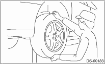
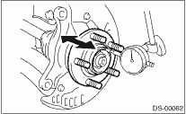

DRIVE SHAFT SYSTEM > Rear Axle
1. While moving the rear tire up and down by hand, check that there is no looseness of the bearing, and check that the wheel rotates smoothly.

2. Inspect the play in the axial direction using a dial gauge. Replace the hub bearing if the play exceeds the limit value.
Service limit:
Maximum: 0.05 mm (0.0020 in)
